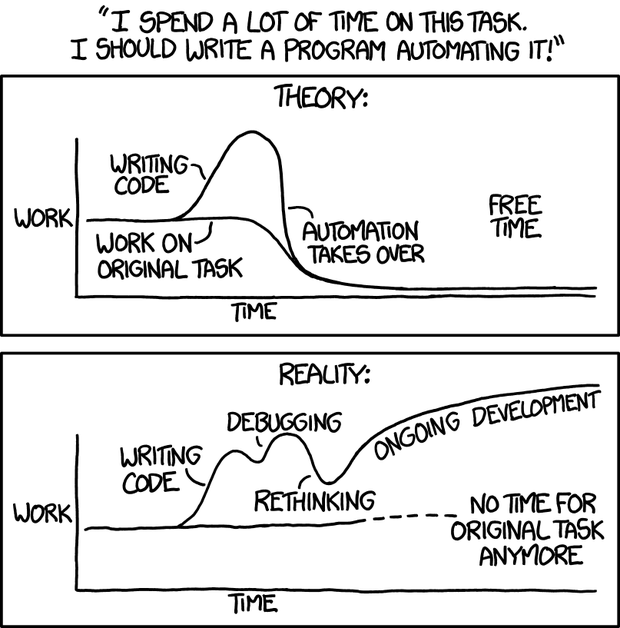
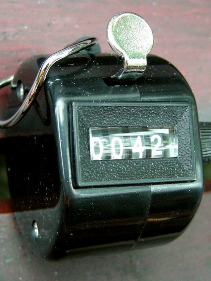
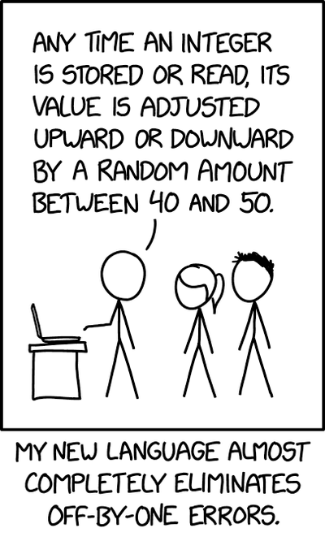
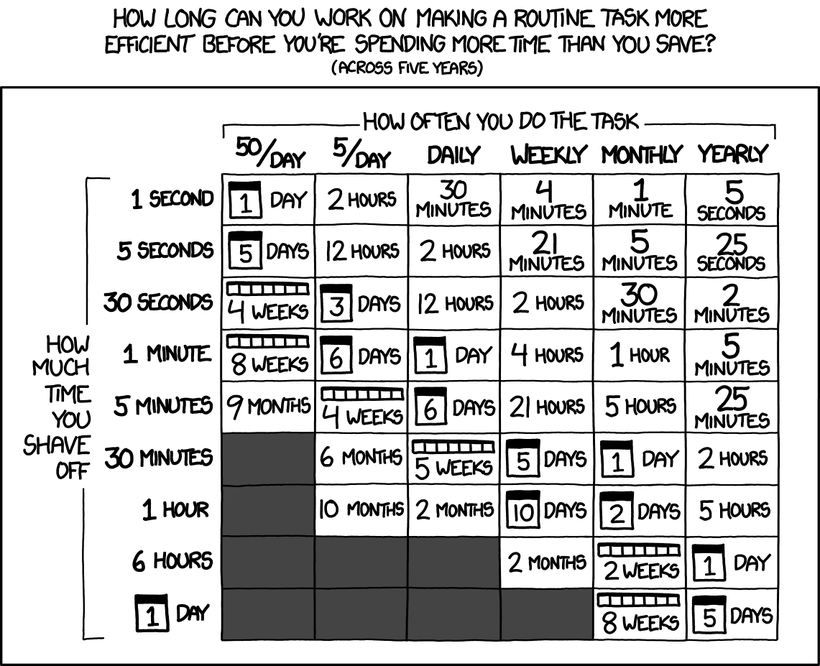

Repetition Structures
You met loops as flowchart arrows pointing back up (Chapter 1) — now you get all
three of them in real C++: while, for, and
do-while, plus sentinels that end a data series, loops nested inside
loops, and the three little statements that steer them: break,
continue, and the treacherous lone semicolon.
Doing it again, and again, and again
while, for, or do-while body do on every pass, until the condition
finally says stop.
Photo: “Conveyor system in a factory” by falco, via Pixabay ·
Wikimedia Commons ·
CC0 (resized)
4.1Three loops, two tests, two kinds of counting
C++ has three repetition structures — while, for, and
do-while — and each needs a condition. Two classifications tell you
which to reach for:
- Where is the test? At the beginning → a pre-test loop (while, for): the body may run zero times. At the end → a post-test loop (do-while): the body always runs at least once.
- How does it stop? A fixed count loop performs a set number of repetitions, tracked by the condition. When the number of repetitions is not known in advance, a variable condition loop stops when a specified value appears — however many passes that takes.

while and for exist at all; the “Reality” curve is why “debugging” is a
normal word in this chapter and not a sign you did something wrong.
Comic: xkcd 1319 “Automation” by Randall Munroe ·
CC BY-NC 2.5
Insanity is doing the same thing over and over again and expecting different results.
4.2while — and counter-controlled repetition
int count; count = 1; // 2. initial value while (count <= 10) { // 3. condition testing the final value cout << count << " "; count++; // 4. the increment } // (1. the control variable: count)
Counter-controlled repetition always needs the same four things: the name of a control variable, its initial value, the condition that tests for its final value, and the increment (or decrement) applied on every pass. Forget number 4 and you have written an unintentional infinite loop.
while loop, in the device's
clock driver, converting “days since 1 Jan 1980” into a year:
int year = ORIGINYEAR; while (days > 365) { if (IsLeapYear(year)) { if (days > 366) { days -= 366; year += 1; } // no else here — on day 366 of a leap year, nothing happens at all } else { days -= 365; year += 1; } }
On day 10,593 — 31 December 2008 — days reached exactly 366 inside a leap year.
days > 365 was true, so the loop kept going; days > 366 was false, so the
inner if had nothing to do and no else to fall back on. Neither days
nor year ever changed again — the device spun in the same four instructions until the clock
finally ticked over to 1 January. Read the reconstructed source and the attempted fixes in
Brian Hayes' “The Zune Bug”,
or Microsoft's own account of the freeze at
The Register.
Every loop condition needs a path where it eventually becomes false — trace what happens on the
exact boundary value, not just “before” and “after” it.
while loop restocking a shelf, then a for loop
computing an exponent one multiplication at a time.

count++. Every click of the lever advances the display by
exactly one — the control variable, its initial value, and the increment, all in one hand. What it
doesn't have is a built-in condition: nothing stops you clicking past whatever number you meant to
stop at. That check is the while's entire job.
Photo: “Hand tally and knitting row counter” by Linda Spashett (Storye book) ·
Wikimedia Commons ·
CC BY 3.0 (cropped)
4.3Sentinels — data that means “stop”
Data values used to indicate the start or end of a data series are called sentinels. A sentinel must not conflict with legitimate data: in the grade-totalling program, grades run 0–100, so any number greater than 100 ends the input.
'\0', whose only job is to say “the text stops here” — so "Hello" really occupies six characters, not five. It works for exactly the reason on this page: '\0' can never be mistaken for a printable letter.
Source: Wikipedia — Sentinel value.
const int HIGHGRADE = 100; // sentinel boundary cin >> grade; // read the FIRST value… while (grade <= HIGHGRADE) { // …test it… total = total + grade; cin >> grade; // …then read the next before retesting }
Little strokes fell great oaks.
4.4for — the loop with the built-in bookkeeping
for (initialization; condition; update) repeats exactly like while —
but the header also initializes the counter and changes it each iteration. The
slides draw its life cycle like this:
for loop whose header states its start, its limit and its step is the easiest kind to prove.
Source: Wikipedia — The Power of 10 rules.
for (count = 2; count <= 20; count = count + 2) cout << count << " "; // 2 4 6 8 10 12 14 16 18 20
Example 4.3.2 puts a for loop to real work: $1000 at 5% interest, printing
a = p(1 + r)ⁿ for each of 10 years in neat
setw columns — you will build it in Exercise 4.

count <= 20 for count < 20 above and the loop quietly stops one
iteration early — no crash, no warning, just a wrong last value.
Comic: xkcd 3062 “Off By One” by Randall Munroe ·
CC BY-NC 2.5
There are only two hard things in Computer Science: cache invalidation and naming things.
4.5Nested loops
A loop contained within another loop is a nested loop. The inner loop runs completely, from start to finish, on every single pass of the outer loop — Example 4.4.1's outer i = 1…5 and inner j = 1…4 execute the inner body 5 × 4 = 20 times. You already met the pattern in Chapter 1's flowcharts; in Chapter 5 it becomes the standard way to walk a 2-D array.
I and J — one reason, together with the mathematicians' habit of writing subscripts as i, j, k, that nested loops still use i and j today.
Source: Wikipedia — Fortran.
Machines take me by surprise with great frequency. This is largely because I do not do sufficient calculation to decide what to expect them to do…
4.6do-while — test at the end
do { <statement(s)>; // runs BEFORE the first test } while (<loop-continuation-condition>); // note the semicolon!
The post-test loop: its body always executes at least once. Example 4.5.1 uses it to sum 2 + 4 + … + n — and “ask until the answer is valid” problems fit it naturally, because you must ask once before there is anything to test.
4.7break, continue — and the null statement
breakcauses an exit from the innermost enclosing loop — execution continues after that loop.continuehalts the current pass and restarts the loop with a new iteration — the slides use it to skip invalid grades so only valid ones reach the total.- A semicolon with nothing preceding it is the null statement — legal, and does nothing.
Chapter 4 quiz
26 questions — classifications, traces, and the traps.
Programming exercises
Six exercises straight from the chapter's examples, plus one famous extra. Use Run sample tests to check your output character for character.
Group discussion: the class survey machine
Teams of 3–4 · one class period to prepare · a 5-minute presentation with a live run. Counts toward the class-activities 10%.
Beware of bugs in the above code; I have only proved it correct, not tried it.
The task
Design and build a sentinel-controlled survey program: it reads a stream of responses (e.g. daily study hours, canteen ratings 1–5, commute minutes) until a sentinel appears, and then reports statistics — count, total, average, largest and smallest. The team chooses the survey topic, the valid range, and the sentinel — and must defend all three.

Constraints that force Chapter 4 thinking
- The main loop must be sentinel-controlled (a variable condition loop) — teams must explain why a fixed count loop cannot work here.
- Invalid responses are skipped with
continue— and counted separately, so the report can say how many were rejected. - At least one output table formatted with
setw, printed by a loop.
Roles
| Role | Responsibility |
|---|---|
| Survey designer | defines the question, the valid range, and defends the choice of sentinel |
| Programmer | drives the Playground during the live run (the whole team designs the loop) |
| Boundary hunter | attacks the demo: sentinel first, all-invalid input, one single response |
| Presenter | walks the audience through the loop's four counter-controlled ingredients |
Further reading
learncpp.com — Loops and while statements
The same ground in more depth, continuing into do-while, for, and break/continue.
Tutoriallearncpp.com — For statements
Idiomatic for-loop style, off-by-one errors, and when to prefer while.
Referencecppreference — for loop
The precise definition of the header's three parts and their evaluation order.
PracticeProject Euler
Hundreds of math problems that are all, at heart, loop-writing practice — problem 1 is ready for you today.
ReferenceWikipedia — Infinite loop
Intentional and unintentional infinite loops — including famous ones that shipped.
True storyBrian Hayes — The Zune Bug
The actual firmware source behind the 2008 Zune leap-day freeze, plus three attempted fixes — and why most of them are still wrong.
ReferenceWikipedia — Off-by-one error
Why < vs <= is the single most common loop-boundary bug, with real-world examples.
cppreference — do-while statement
The precise definition of the post-test loop, alongside while and for on the same reference site.
VideoCrash Course CS #12 — Statements & Functions
~11 minutes from conditionals to while and for loops — the direct sequel to Chapter 3's episode #3.
TextbookMalik — C++ Programming, Chapter 5
Control structures II: repetition — with many more worked loop programs.